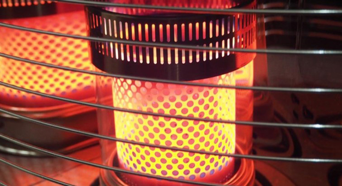
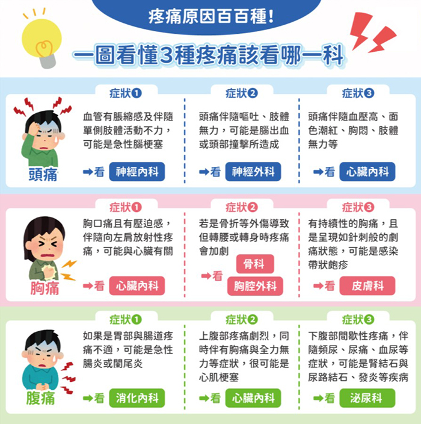

每到冬天很多平常治療控制很好的民眾，不約而同發現未見的疼痛又開始作怪，明明沒有受傷或過度操勞舊傷卻突然復發，臨床醫師發現疼痛會發作似乎也跟天氣變化有關係，尤其當氣溫降低時狀況會更明顯，若想要減少疼痛除了做好保暖以外，多曬太陽、多運動都是很好的改善方式。 |
| 低溫加劇疼痛感！血管收縮也易發炎疼痛 |
過往研究顯示，溫度降低時，身體對於疼痛忍受程度會有所變化，尤其是對於關節的冷痛及壓痛感覺會變得更加敏感。臺北市立聯合醫院林森中醫昆明院區中醫科謝明憲醫師說：「低溫時身體周邊循環會導致血管收縮、循環變差，進而降低局部組織的修復能力，而容易產生發炎疼痛」。 低溫刺激也會讓肌肉緊繃、身體僵硬，使活動更加受到限制，活動時也更容易造成疼痛發生。但為何疼痛發作大多會出現在「舊傷」或「平常不舒服位置」上呢？ |
|  |
| 「保暖」防疼痛最高原則！運動、熱敷、曬太陽也有效 |
謝明憲醫師解釋：「臨床觀察，肌肉、肌腱、韌帶、皮膚等軟組織常會因為身體的使用不當或受傷等因素，導致過度的攣縮、纖維化或鈣化，而在活動過程中，因為拉扯力量過大，所以容易在力量聚集的受力點導致組織受傷及發炎而疼痛」。 如今，因溫度降低而造成肌肉、皮膚等組織更加的收縮，當然會更進一步的造成身體疼痛，限制身體活動。 若想要達到預防、治療，採取各種讓肌肉放鬆、血液循環改善方式來改善及減少疼痛，臨床上最常建議就是「注意保暖」，除了穿著保暖衣物、多曬太陽，也可以在不舒服的位置使用暖暖包或熱水袋熱敷：每天1-3 次、每次 10-15 分鐘；如果是糖尿病、中風及循環異常（如雷諾氏症候群）的患者使用上必須更加小心燙傷。 |
|  |
此外，適度運動也是很好的建議，其可改善血液循環，放鬆筋骨而改善疼痛，如果是關節未退化且活動正常的患者，可適度的跑步或健走，每天持續30-60分鐘，適度拉筋伸展及熱身運動也很重要，可讓肌肉放鬆，減少運動時對於身體傷害。 |
| 「導引動作」調整身體協調性 |
另外，太極拳等導引動作，在改善及預防疼痛也有很大的作用，醫師指出：「過去對於肌肉骨骼系統導致的疼痛，大多著重在單一的肌肉拉扯損傷上面」，但越來越多醫師注意到，身體活動及力量的使用，常常是由身體很多部位的肌肉共同協調完成，而身體力量及張力的傳導也是由整個系統來分擔。很多過去曾受傷或過度使用的患者會因為這個協調作用受到干擾，導致張力無法平均分布，最後分散不出去的力量長期對某部位拉扯，因而造成疼痛產生。而「導引動作」可以訓練及改善這種協調的狀態，並且進一步的改善及預防疼痛發生。 |
| 資料來源 「疼痛問題」在冬天更易好發！多曬太陽、多運動就能預防 - Heho健康 |